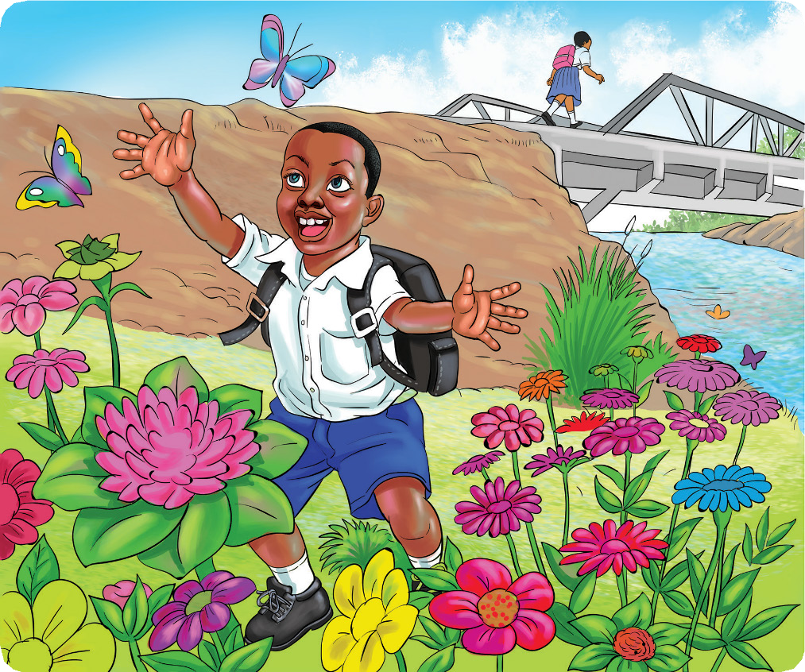

Soma habari hii, kisha jibu maswali yanayofuata.
Nia na mdogo wake
Nia ni mwanafunzi wa Shule ya Msingi Ushindi katika Wilaya ya Bora, mkoani Sanya. Baba yake Nia anaitwa Bwana Fukama na mama yake anaitwa Bibi Sokota. Nia ana mdogo wake aitwaye Bute. Nia na mdogo wake wanaishi katika Kijiji cha Kibeta, kilometa tatu kutoka Shule ya Msingi Ushindi. Nia anasoma Darasa la Tano lakini Bute anasoma Darasa la Kwanza. Siku za shule, Nia humuamsha mdogo wake mapema ili kupata kifungua kinywa kabla ya kwenda shuleni.
Siku moja, Nia alichelewa sana kuamka. Alipoamka, alimwamsha mdogo wake kisha wakajiandaa harakaharaka ili waweze kuwahi kwenda shuleni. Baada ya kunywa chai, waliwaaga wazazi wao. Walianza safari yao ya kwenda shuleni. Wakiwa njiani, Nia alitangulia mbele na Bute alimfuata nyuma. Nia alitembea harakaharaka huku akimhimiza Bute kuongeza mwendo. Kadiri muda ulivyozidi kusogea, Nia aliongeza mwendo bila kugeuka nyuma.
FOR ONLINE READING ONLY

Nia na Bute walifika kwenye Daraja la Kitunda. Walipofika hapo, Bute alivutiwa na vipepeo wa rangi mbalimbali. Vipepeo hao waliruka huku na kule wakifurahia maua yaliyokuwa yamezunguka Daraja la Kitunda. Badala ya kuvuka daraja, Bute alisimama na kuwatazama vipepeo hao akitamani kumkamata mmojawapo. Huku Bute akiwa amesimama, Nia aliendelea na safari bila kujua kwamba mdogo wake alikuwa akishangaa vipepeo.
Bute alianza kuwafuata vipepeo. Vipepeo waliruka wawezavyo ili kukwepa kukamatwa. Bute aliendelea kuwakimbiza. Bila kujua, alijikuta katikati ya msitu mnene. Hakuweza kutambua alikotokea. Alisimama na kuanza kumwita dada yake pasipo mafanikio. Alijaribu kutafuta njia ya kurudi darajani bila mafanikio. Baada ya kutembea kwa muda mrefu, alichoka sana. Aliamua kupumzika chini ya mti na kuanza kulia. Baada ya muda, alipitiwa na usingizi; akalala fofofo.
Nia, bila kujua, aliendelea na safari ya kuelekea shuleni. Alipokaribia, aligeuka nyuma kumtazama mdogo wake lakini hakumwona. Alishituka akaanza kurudi nyuma huku akiita kwa sauti, “Bute! Bute! Buteeee!” Nia aliendelea kuita kwa sauti huku akikimbia kurudi darajani. Njiani alikutana na watoto wawili. Akawauliza, “Mmemwona mwanafunzi wa kiume mwenye begi lenye rangi nyeusi?” Watoto walijibu, “Hapana dada!” Nia aliendelea na safari ya kurudi nyumbani akidhani kwamba angemkuta mdogo wake.
Alipofika nyumbani, aliwakuta wazazi wake wakijiandaa kwenda shambani. Nia alikuwa amelowa jasho mwili mzima. Alikuwa akihema na alionekana amechoka sana. Wazazi wake walishituka na kumkimbilia. Walimuuliza, “Vipi, mbona umerudi mapema?” Nia alijibu, “Bute amepotea.” Wazazi wake walipatwa na hofu na wasiwasi. Kila mmoja alishika njia yake kumtafuta Bute.
Nia aliamua kuandika tangazo ili kurahisisha upatikanaji wa taarifa ya kupotea kwa Bute. Aliandika hivi:
Bute ni mtoto mwenye umri wa miaka saba. Ni mwanafunzi wa Darasa la Kwanza katika Shule ya Msingi Ushindi, iliyoko Wilaya ya Bora, mkoani Sanya. Bute amepotea tarehe 22/04/2018 saa 1:15 asubuhi. Mara ya mwisho alionekana katika Daraja la Kitunda akiwa amevaa sare ya shule; kaptura yenye rangi ya bluu na shati jeupe na alibeba begi la rangi nyeusi mgongoni. Kwa yeyote atakayemuona, apige simu namba 2550123/2550321 au atoe taarifa kwenye kituo chochote cha polisi.
Baada ya kuandaa tangazo, alikumbuka kuwa alihitaji kuwa na nakala nyingi. Aliandika nakala kumi. Alipokamilisha kazi yake, alifungua mlango na kuelekea nje. Alipiga mbio kuelekea vijiji vya jirani. Alisambaza matangazo yake kwa umakini. Baadhi aliyaweka kwenye kuta za majengo na mengine kwenye miti iliyokuwa karibu na njia.
Baada ya kazi yake kukamilika, alianza safari ya kuelekea shuleni. Alipofika shuleni, aliwaeleza walimu kilichotokea. Walimu walimpa pole na kumtia moyo kwamba mdogo wake atapatikana. Walisisitiza kwamba kama hatapatikana, saa tisa mchana watatawanyika kwenda kumtafuta. Nia aliingia darasani.
Ilipofika saa nane, Nia alienda ofisini kwa walimu kuuliza kama wamepata taarifa zozote kuhusu mdogo wake. Alipofika ofisini, alishangaa kumwona Bute ameketi ofisini. Alikuta walimu wakizungumza na kijana mmoja aliyetambulishwa kwa jina la Bahati. Bahati alisema, “Nimemkuta mtoto amelala chini ya mti wakati ninakata kuni. Niliondoka naye kuelekea nyumbani. Nikiwa njiani, niliona tangazo lililotaja jina la shule hii. Niliamua kumleta hapa shuleni.” Nia alifurahi sana kumpata mdogo wake. Walimu walifurahi pia. Walimpongeza Nia kwa kutumia vyema maarifa aliyoyapata darasani.
Nia na Bute walirudi nyumbani. Wazazi wao walifurahi sana kwa kumwona Bute. Baada ya wiki mbili, Nia alipokea barua kutoka kwa rafiki yake Suma; alimwandikia kumuuliza kama mdogo wake amepatikana. Baada ya kupokea ile barua, Nia alikumbuka kuwa mwalimu wake wa Kiswahili aliwafundisha kuhusu kujibu barua ya kirafiki. Siku iliyofuata jioni, Nia aliingia chumbani kwake, akachukua kalamu na karatasi kwenye begi lake na kuanza kuandika barua ya kumjibu Suma. Aliandika hivi:
Kwako rafiki yangu Suma,
Salamu nyingi sana zikufikie huko uliko. Unaendeleaje na hali yako? Ninatumaini uko salama na unaendelea vyema na shughuli zako za kila siku.
Lengo la barua hii ni kujibu barua uliyoniandikia kuhusu kupotea kwa mdogo wangu. Ninayo furaha kukupa taarifa kwamba mdogo wangu mpendwa Bute alipatikana. Yuko salama na afya yake njema.
Salamu nyingi kwa wazazi wako.